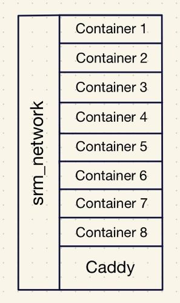

Storage
- Root and boot partitons (SSD), and hard drive are automatically mounted on startup using the fstab file.
- Hard drive allocates space for a swap file.
Permissions
- (There's an image in the information section about permissions for reference)
- Specific containers exist as a user, and belong to a group
- These containers utilize UID/GID mapping.
- Meanwhile, other containers are granted more system privileges than the rest.
- In general, no permissions are granted for others.
- Three bash scripts are dedicated to updating ownership and permissions for the script and log, media, and Docker container directories.
- These scripts are automated with Cron.
- They're configured the scripts to append their output to a log file.
- And scheduled to run at every hour, but spaced out by 5 minutes. So the second and third script will run at the 5 and 10 minute mark at each hour.
Caddy
- Caddy acts as a reverse proxy and provides internally signed HTTPS for all containers specified in the Caddyfile within srm_network.
- All of the containers defined in the Caddyfile have their own .home domain.
- I feel like the best way of visualizing my Docker setup with Caddy is by using the apartment or hotel analogy.
- Receptionist (Caddy)
- Caddy listens for requests on port 80 and 443 from containers listed in the Caddyfile.
- (In Pi-hole, there's local DNS records for each of the .home domains pointing towards my network's local IP)
- Elevator (srm_network)
- The Docker network, srm_network, connects all of my containers together. Allowing them to communicate with each other.
- Docker Containers (Apartment/Hotel Room)
- All of the containers are self contained, they can only be contacted through their port number. Similar to a door. Otherwise, they operate separately from each other.
HTTPS
- All of the domains use HTTPS instead of HTTP because Caddy internally signs each of my domains using its own private certificate authority (CA).
- This provides end-to-end encryption without having to expose services to the internet.

CrowdSec
- CrowdSec processes logs from auth.log, and makes decisions based on suspicious activity related to things like failed SSH attempts.
- An acquis.yaml file is used to direct it to the the auth.log
- Utilizing CrowdSec means it'll list IPs that should be banned in the decision list, but it doesn't mean it'll actually ban.
- That's why I've implemented CrowdSec's Firewall Bouncer.
- CrowdSec Firewall Bouncer is installed on the host machine, or this server. It's not in a Docker container.
- The Firewall Bouncer ban IPs on the decision list and community blocklist (CAPI) by adding it to the nftables.
Docker Containers
- (At the beginning of the year, I did a serious overhaul of my server by switching to bind mounts and using specific image versions instead of the latest.)
- Type of volume: bind.
- Creates a bridge between the host directory and container directory.
- Permissions are handled by me instead of Docker, and they're not stored within /var/lib/docker.
- For example, the media directory might look like /directory/directory/media, but inside of the container it's /data. So the bridge exists between the media and data directory.
- Switched to specifying the image versions because I found it difficult to identify what version I was using.
- I try to use the most recent stable version for each container.
- This makes backup and version control much easier.
- Configured Diun to check for updates.
Backup
- Docker Registry is used to store the container images.
- This doesn't include the volumes, or configuration files (e.g. docker compose, Caddyfile, etc). It only includes the software environment (e.g. OS, dependencies, plugins).
- It's helpful whenever I need to revert to an older image, especially if the version was deleted.
- It works by creating tags and pushing them into the registry. Then when I want to revert, I replace the image version with the tag in the docker compose.
- I utilized a bash script with Cron to create an efficient backup system.
- Rsync reduces redundant data and disk space by only copying new changes while also mirroring the unchanged data.
- If the backup folder isn't empty, it'll either copy with rsync or create a hard link if there's no change.
- This script is scheduled to run at 7am everyday.
SteamCMD + Rust Server
- (This feels kind of out of place since it's a video game server, but I'm going to focus on the server side of things. In the future, I think it would be cool to provide information on how to setup a Rust server for others though.)
- For SteamCMD I followed the documentation: created a steam user and followed the instructions under 'manually'.
- Every time I want to work on the Rust server, I login as the steam user.
- This provides me with what feels like a server within my actual server, but it's just a user folder in the home directory that can only be accessed by that user.
Information + Terms
- Fstab: a configuration file, located in /etc/fstab, which is used to automate the mounting of persistent storage and swap space at boot.
- Persistent storage: storage that is non-volatile, or able to retain its data even when there isn't any power.
- Swap file: a file which acts as a placeholder for allocated space used by the RAM when it's at full capacity.
- Cron: a Unix utility which automates the execution of cron jobs at specified interval, or time in the crontab.